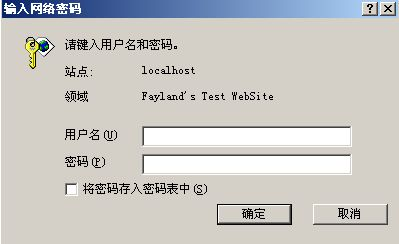

Category: mod_perl Keywords: PerlAuthenHandler apache modperl
- 如果不用 modperl 的话，我们也可以这么做：
- 修改 httpd.conf
Alias /t/ "E:/Fayland/t/"
<Directory "E:/Fayland/t">
AllowOverride AuthConfig
Options Indexes MultiViews
Order allow,deny
Allow from all
</Directory> - 在 E:/Fayland/t 目录下创建 .htaccess 文件
AuthName "Fayland's Test WebSite"
AuthType Basic
AuthUserFile E:/Fayland/t/.htpasswd
require valid-user - 用 Apache 的 htpasswd 命令创建用户名和密码（第一次需要 -c 开关）
$> htpasswd -c E:/Fayland/t/.htpasswd fayland
这样就可以了，访问 http://localhost/t 时会弹出这样的窗口：
$> htpasswd E:/Fayland/t/.htpasswd hi

而一般我们都把用户名和密码存在数据库里，这样比较方便增加和修改用户密码等。
在 modperl 中这一块是使用 PerlAuthenHandler 来处理的。一个事例代码如下：
package MyApache2::MyAuth;use strict;然后在 perl.conf 里面添加
use warnings;use Apache2::Access ();
use Apache2::RequestRec ();
use Apache2::Const -compile => qw(OK DECLINED HTTP_UNAUTHORIZED);use DBI;
my $dbh = DBI->connect("DBI:mysql:auth:localhost",
'root', undef, { RaiseError => 1, PrintError => 1 }) or die "cann't connect";sub handler {
my $r = shift; my ($status, $password) = $r->get_basic_auth_pw;
return $status unless $status == Apache2::Const::OK; my $sth = $dbh->prepare("SELECT password FROM users WHERE username = ?");
$sth->execute($r->user);
my @turepwd = $sth->fetchrow_array(); if ($password eq $turepwd[0]) {
return Apache2::Const::OK;
}
$r->note_basic_auth_failure;
return Apache2::Const::HTTP_UNAUTHORIZED;
}
1;
Alias /auth/ "E:/Fayland/auth/"上面就是一个简单的例子。这里没有使用 Apache::DBI 而是直接使用了 DBI 是为了简便。
<Location /auth/>
SetHandler perl-script
PerlResponseHandler ModPerl::Registry
PerlAuthenHandler MyApache2::MyAuth
Options +ExecCGI
AuthType Basic
AuthName "Fayland's Test WebSite"
Require valid-user
</Location>
- 简单的解释下代码：
- my ($status, $password) = $r->get_basic_auth_pw;
第一个 $status 是状态，只有在弹出窗口的用户名和密码都被填写时，$status 为 Apache2::Const::OK
否则的话，return $status unless $status == Apache2::Const::OK; 返回它原来的状态。一般就是浏览器直接显示 401 Authorization Required - 必须注意是 AuthType Basic 这样才能用 $r->get_basic_auth_pw
- 用户名用 $r->user 获取，密码用 $r->get_basic_auth_pw 的第二字段
- 然后我们比较的密码，如果密码正确的话返回 Apache2::Const::OK 否则返回 Apache2::Const::HTTP_UNAUTHORIZED 让它继续验证。
不过大致的代码就是这个样子了。更详细的查看 Apache/modperl 文档：
http://perl.apache.org/docs/2.0/user/handlers/http.html#PerlAuthenHandler